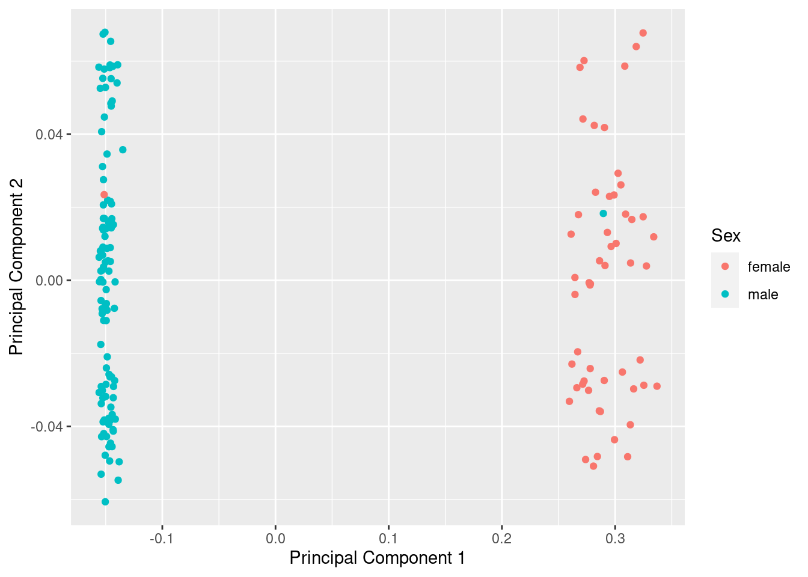
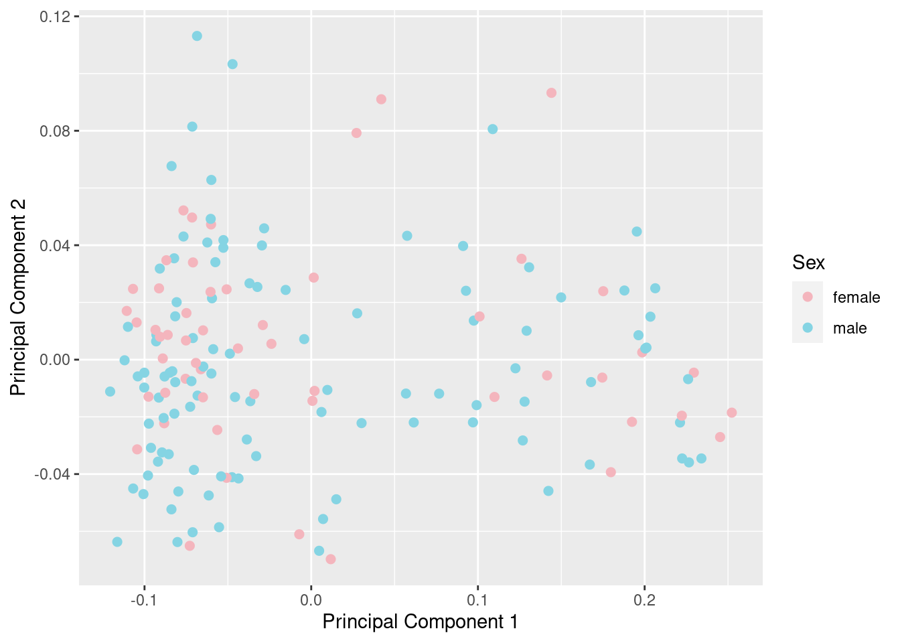
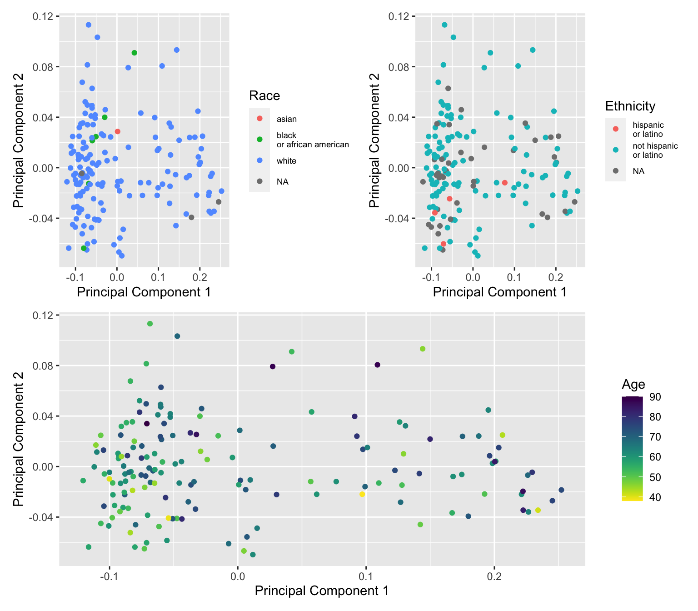
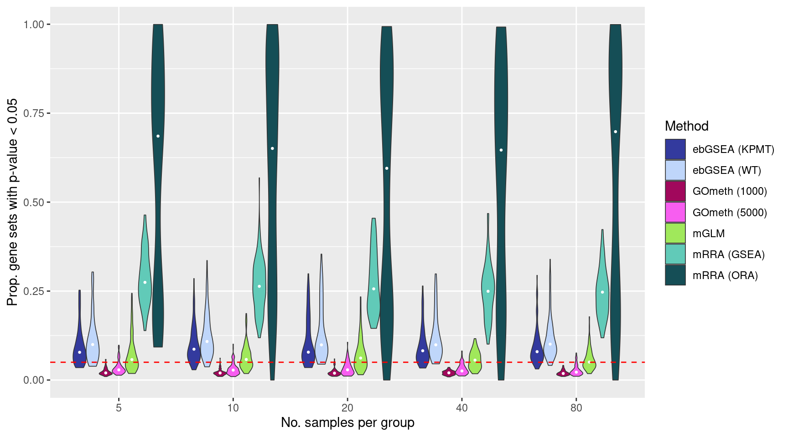

Gene set testing for Illumina HumanMethylation Arrays
Comparing the false discovery rate of different methods
Jovana Maksimovic, Alicia Oshlack and Belinda Phipson
August 21, 2020
Last updated: 2020-08-21
Checks: 7 0
Knit directory: methyl-geneset-testing/
This reproducible R Markdown analysis was created with workflowr (version 1.6.2). The Checks tab describes the reproducibility checks that were applied when the results were created. The Past versions tab lists the development history.
Great! Since the R Markdown file has been committed to the Git repository, you know the exact version of the code that produced these results.
Great job! The global environment was empty. Objects defined in the global environment can affect the analysis in your R Markdown file in unknown ways. For reproduciblity it's best to always run the code in an empty environment.
The command set.seed(20200302) was run prior to running the code in the R Markdown file. Setting a seed ensures that any results that rely on randomness, e.g. subsampling or permutations, are reproducible.
Great job! Recording the operating system, R version, and package versions is critical for reproducibility.
Nice! There were no cached chunks for this analysis, so you can be confident that you successfully produced the results during this run.
Great job! Using relative paths to the files within your workflowr project makes it easier to run your code on other machines.
Great! You are using Git for version control. Tracking code development and connecting the code version to the results is critical for reproducibility.
The results in this page were generated with repository version e3b14f4. See the Past versions tab to see a history of the changes made to the R Markdown and HTML files.
Note that you need to be careful to ensure that all relevant files for the analysis have been committed to Git prior to generating the results (you can use wflow_publish or wflow_git_commit). workflowr only checks the R Markdown file, but you know if there are other scripts or data files that it depends on. Below is the status of the Git repository when the results were generated:
Ignored files:
Ignored: .DS_Store
Ignored: .Rhistory
Ignored: .Rproj.user/
Ignored: analysis/figures.nb.html
Ignored: code/.job/
Ignored: code/old/
Ignored: data/.DS_Store
Ignored: data/annotations/
Ignored: data/cache-intermediates/
Ignored: data/cache-region/
Ignored: data/cache-rnaseq/
Ignored: data/cache-runtime/
Ignored: data/datasets/GSE110554-data.RData
Ignored: data/datasets/SRP125125/SRR6298258/
Ignored: data/datasets/SRP125125/SRR6298271/
Ignored: data/datasets/SRP125125/SRR6298273/
Ignored: data/datasets/SRP125125/SRR6298278/
Ignored: data/datasets/SRP125125/SRR6298281/
Ignored: data/datasets/SRP125125/SRR6298284/
Ignored: data/datasets/SRP125125/SRR6298286/
Ignored: data/datasets/SRP125125/SRR6298299/
Ignored: data/datasets/SRP125125/SRR6298302/
Ignored: data/datasets/SRP125125/SRR6298307/
Ignored: data/datasets/SRP125125/SRR6298310/
Ignored: data/datasets/SRP125125/SRR6298313/
Ignored: data/datasets/SRP125125/SRR6298315/
Ignored: data/datasets/SRP125125/SRR6298328/
Ignored: data/datasets/SRP125125/SRR6298331/
Ignored: data/datasets/SRP125125/SRR6298336/
Ignored: data/datasets/SRP125125/SRR6298339/
Ignored: data/datasets/SRP125125/SRR6298342/
Ignored: data/datasets/SRP125125/SRR6298344/
Ignored: data/datasets/SRP125125/SRR6298365/
Ignored: data/datasets/SRP125125/SRR6298370/
Ignored: data/datasets/SRP125125/SRR6298373/
Ignored: data/datasets/SRP125125/SRR6298376/
Ignored: data/datasets/SRP125125/SRR_Acc_List.txt
Ignored: data/datasets/SRP125125/SRR_Acc_List_Full.txt
Ignored: data/datasets/SRP125125/SraRunTable.txt
Ignored: data/datasets/SRP125125/multiqc_data/
Ignored: data/datasets/SRP125125/multiqc_report.html
Ignored: data/datasets/SRP125125/quants/
Ignored: data/datasets/TCGA.KIRC.rds
Ignored: data/genesets/BROAD-sets.rds
Ignored: data/misc/
Ignored: output/.DS_Store
Ignored: output/FDR-analysis/
Ignored: output/cache-rnaseq/
Ignored: output/compare-methods/
Ignored: output/figures/
Ignored: output/methylgsa-params/
Ignored: output/random-cpg-sims/
Note that any generated files, e.g. HTML, png, CSS, etc., are not included in this status report because it is ok for generated content to have uncommitted changes.
These are the previous versions of the repository in which changes were made to the R Markdown (analysis/04_fdrAnalysis.Rmd) and HTML (docs/04_fdrAnalysis.html) files. If you've configured a remote Git repository (see ?wflow_git_remote), click on the hyperlinks in the table below to view the files as they were in that past version.
| File | Version | Author | Date | Message |
|---|---|---|---|---|
| Rmd | e3b14f4 | JovMaksimovic | 2020-08-21 | wflow_publish(c("analysis/01_exploreArrayBiasEPIC.Rmd", "analysis/02_exploreArrayBias450.Rmd", |
| html | 555069b | JovMaksimovic | 2020-08-14 | Build site. |
| Rmd | 91699a8 | JovMaksimovic | 2020-08-14 | wflow_publish("analysis/_site.yml", republish = TRUE, all = TRUE) |
| Rmd | 39bdd22 | JovMaksimovic | 2020-08-14 | Renamed analysis files with numbering for run order. |
library(here)
library(minfi)
library(paletteer)
library(limma)
library(reshape2)
library(missMethyl)
library(ggplot2)
library(glue)
library(tibble)
library(dplyr)
library(curatedTCGAData)
library(MultiAssayExperiment)
library(TCGAutils)
library(DMRcate)
library(patchwork)
source(here("code/utility.R"))Load data
We are using publicly available kidney clear cell carcinoma (KIRC) 450k data from The Cancer Genome Atlas (TCGA). We are using only the normal samples to look at false discovery rate (FDR) control by various methylation gene set testing methods.
First, download the data using the curatedTCGAData Bioconductor package and then extract the normal samples. The data is provided as β values with masked data points; data points were masked as “NA” if their detection p-value was greater than 0.05 or the probe was annotated as having a SNP within 10 base pairs or repeat within 15 base pairs or the interrogated CpG. We extract only the 160 normal samples.
kirc <- curatedTCGAData(diseaseCode = "KIRC", assays = "Methylation_methyl450",
dry.run = FALSE)
kirc <- splitAssays(kirc, c("11")) # extract only the normal samples
exp <- experiments(kirc)[[1]]
meta <- colData(kirc)
betas <- as.matrix(assay(exp))
colnames(betas) <- substr(colnames(betas), 1, 12)
m <- match(colnames(betas), meta$patientID)
meta <- meta[m, ]
head(meta[, 1:5])Quality control
Removed any probes with >1 NA value.
betasNoNA <- betas[rowSums(is.na(betas)) == 0, ]
mds <- plotMDS(betasNoNA, gene.selection = "common", plot = FALSE)
dat <- tibble(x = mds$x, y = mds$y, gender = meta$gender)
ggplot(dat, aes(x = x, y = y, colour = gender)) +
geom_point() +
labs(x = "Principal Component 1", y = "Principal Component 2",
colour = "Sex")
| Version | Author | Date |
|---|---|---|
| 555069b | JovMaksimovic | 2020-08-14 |
Remove any remaining SNP-affected probes and multi-mapping and sex-chromosome probes. This leaves 364,602 probes for downstream analysis.
betasFlt <- rmSNPandCH(betasNoNA, rmXY = TRUE, rmcrosshyb = TRUE)snapshotDate(): 2019-10-22see ?DMRcatedata and browseVignettes('DMRcatedata') for documentationloading from cachesee ?DMRcatedata and browseVignettes('DMRcatedata') for documentationloading from cachesee ?DMRcatedata and browseVignettes('DMRcatedata') for documentationloading from cachedim(betasFlt)[1] 364602 160We no longer observe a sex effect or other structure in the data.
mds <- plotMDS(betasFlt, gene.selection = "common", plot = FALSE)
dat <- tibble(x = mds$x, y = mds$y, gender = meta$gender)
pal <- paletteer::paletteer_d("wesanderson::Moonrise3", 2)
cols <- c("female" = pal[2], "male" = pal[1])
p <- ggplot(dat, aes(x = x, y = y, colour = gender)) +
geom_point(size = 2) +
labs(x = "Principal Component 1", y = "Principal Component 2",
colour = "Sex") +
scale_color_manual(values = cols)
p
| Version | Author | Date |
|---|---|---|
| 555069b | JovMaksimovic | 2020-08-14 |
Save figure for use in manuscript.
outDir <- here::here("output/figures")
if (!dir.exists(outDir)) dir.create(outDir)
fig <- here("output/figures/Fig-3C.rds")
saveRDS(p, fig, compress = FALSE)Colour MDS plot using different variables to explore any further structure in the data.
dat$age <- meta$years_to_birth
dat$race <- sub(" or", "\nor", meta$race)
dat$ethnicity <- sub(" or", "\nor", meta$ethnicity)
a <- ggplot(dat, aes(x = x, y = y, colour = age)) +
geom_point() +
labs(x = "Principal Component 1", y = "Principal Component 2",
colour = "Age") +
viridis::scale_color_viridis(direction = -1)
b <- ggplot(dat, aes(x = x, y = y, colour = race)) +
geom_point() +
labs(x = "Principal Component 1", y = "Principal Component 2",
colour = "Race") +
theme(legend.text = element_text(size = 7))
c <- ggplot(dat, aes(x = x, y = y, colour = ethnicity)) +
geom_point() +
labs(x = "Principal Component 1", y = "Principal Component 2",
colour = "Ethnicity") +
theme(legend.text = element_text(size = 7))
(b + c) / a
| Version | Author | Date |
|---|---|---|
| 555069b | JovMaksimovic | 2020-08-14 |
dat <- as_tibble(melt(betasFlt))
colnames(dat) <- c("cpg", "ID", "beta")
p <- ggplot(dat, aes(x = beta)) +
geom_line(aes(color = ID), stat="density", size=0.5, alpha=0.5,
show.legend = FALSE)
p + labs(x = "Beta value", y = "Density")
| Version | Author | Date |
|---|---|---|
| 555069b | JovMaksimovic | 2020-08-14 |
Save the filtered TCGA KIRC data for use in subsequent FDR analysis.
outFile <- here("data/datasets/TCGA.KIRC.rds")
if(!file.exists(outFile)){
saveRDS(betasFlt, file = outFile)
}FDR analysis
We randomly select 5, 10, 20, 40, 80 samples per "group" from the TCGA KIRC normal samples and then perform differential methylation analysis between the two "groups". We do this 100 times for each "group" size. There should be no significant differential methylation between the groups as the data contains no signal. Consequently, we expect about 5% false gene set discoveries across the 100 simulations from methods that are "holding their size".
We compare GOmeth (with top 1000 and 5000 ranked CpGs from the DM analysis selected as "significant"), methylglm (mGLM), methylRRA-ORA (mRRA (ORA)), methylRRA-GSEA (mRRA (GSEA)) from the MethylGSA package and ebayGSEA from the ChAMP package. As ebayGSEA can only be run on its in-built BROAD MSigDB gene sets, to be able to compare across ALL methods, we only used the BROAD MSigDB gene sets provided with ChAMP package for this analysis.
The code used to produce the simulation results can be found in the code/fdr-analysis directory. It consists of three scripts: genRunFDRAnalysisJob.R, runFDRAnalysis.R and processFDRAnalysis.R. The genRunFDRAnalysisJob.R script creates and submits Slurm job scripts that run the runFDRAnalysis.R script, in parallel, on a HPC. Each job executes one of the 100 simulations, for a "group" size. The results of each job are saved as an RDS file named FDR.{sampleNo}.{simNo}.rds in the output/FDR-analysis directory. Once all simulation jobs are complete, the processFDRAnalysis.R must be executed to collate the results into a single object, which is then saved as FDR-analysis.rds in the output/FDR-analysis directory. The intermediate RDS files are moved into output/FDR-analysis/.bin, which can then be deleted, if no longer required. The subsequent section requires FDR-analysis.rds to be present in the output/FDR-analysis directory for downstream analysis and plotting.
Load the results of the FDR simulations.
inFile <- here("output/FDR-analysis/FDR-analysis.rds")
if(file.exists(inFile)) dat <- as_tibble(readRDS(inFile))The plots below shows that mRRA (ORA) does not control the FDR very well as the median proportion of p-value 0.05 for the 100 simulations is greater than 0.5. mRRA (GSEA) does better, although its median FDR is still relatively high at around 0.25. mGLM has good FDR control with median FDR at around 0.05. ebayGSEA is only slightly anti-conservative using both the Wilcox test (WT) and Known Population Median test (KPMT) with a median FDR at around 0.06-0.08. GOmeth is very consistent although somewhat conservative with a median FDR at around 0.02-0.03.
dat %>% mutate(method = unname(dict[method])) %>%
group_by(simNo, sampleNo, method) %>%
summarise(psig = sum(pvalue < 0.05)/length(pvalue)) %>%
mutate(sampleOrd = as.integer(sampleNo)) -> sigDat`summarise()` regrouping output by 'simNo', 'sampleNo' (override with `.groups` argument)p <- ggplot(sigDat, aes(x = reorder(sampleNo, sampleOrd), y = psig,
fill = method)) +
geom_violin(scale = "width", width = 0.8, size = 0.3) +
stat_summary(geom = "point", size = 0.5, color = "white",
position = position_dodge(0.8),
show.legend = FALSE, fun = median) +
geom_hline(yintercept=0.05, linetype="dashed", color = "red") +
labs(y="Prop. gene sets with p-value < 0.05", x="No. samples per group",
fill="Method") +
scale_fill_manual(values = methodCols)
p
| Version | Author | Date |
|---|---|---|
| 555069b | JovMaksimovic | 2020-08-14 |
Save figure for use in manuscript.
fig <- here("output/figures/Fig-3D.rds")
saveRDS(p, fig, compress = FALSE)Calculate the median number of significant gene sets per method, across simulations and sample numbers.
dat %>% mutate(method = unname(dict[method])) %>%
group_by(simNo, sampleNo, method) %>%
summarise(num = sum(pvalue < 0.05)) %>%
group_by(sampleNo, method) %>%
summarise(med = median(num)) %>%
group_by(method) %>%
summarise(med = median(med)) -> medNoSets
medNoSets# A tibble: 7 x 2
method med
<chr> <dbl>
1 ebGSEA (KPMT) 624
2 ebGSEA (WT) 708.
3 GOmeth (1000) 180
4 GOmeth (5000) 278.
5 mGLM 492
6 mRRA (GSEA) 2117
7 mRRA (ORA) 5388
sessionInfo()R version 3.6.3 (2020-02-29)
Platform: x86_64-apple-darwin15.6.0 (64-bit)
Running under: macOS Mojave 10.14.6
Matrix products: default
BLAS: /Library/Frameworks/R.framework/Versions/3.6/Resources/lib/libRblas.0.dylib
LAPACK: /Library/Frameworks/R.framework/Versions/3.6/Resources/lib/libRlapack.dylib
locale:
[1] en_AU.UTF-8/en_AU.UTF-8/en_AU.UTF-8/C/en_AU.UTF-8/en_AU.UTF-8
attached base packages:
[1] stats4 parallel stats graphics grDevices utils datasets
[8] methods base
other attached packages:
[1] DMRcatedata_2.2.1 ExperimentHub_1.12.0
[3] AnnotationHub_2.18.0 BiocFileCache_1.10.2
[5] dbplyr_1.4.4 rhdf5_2.30.1
[7] patchwork_1.0.1 DMRcate_2.0.7
[9] TCGAutils_1.6.2 curatedTCGAData_1.8.1
[11] MultiAssayExperiment_1.12.6 dplyr_1.0.0
[13] tibble_3.0.3 glue_1.4.1
[15] ggplot2_3.3.2 missMethyl_1.20.4
[17] reshape2_1.4.4 limma_3.42.2
[19] paletteer_1.2.0 minfi_1.32.0
[21] bumphunter_1.28.0 locfit_1.5-9.4
[23] iterators_1.0.12 foreach_1.5.0
[25] Biostrings_2.54.0 XVector_0.26.0
[27] SummarizedExperiment_1.16.1 DelayedArray_0.12.3
[29] BiocParallel_1.20.1 matrixStats_0.56.0
[31] Biobase_2.46.0 GenomicRanges_1.38.0
[33] GenomeInfoDb_1.22.1 IRanges_2.20.2
[35] S4Vectors_0.24.4 BiocGenerics_0.32.0
[37] here_0.1 workflowr_1.6.2
loaded via a namespace (and not attached):
[1] utf8_1.1.4
[2] R.utils_2.9.2
[3] tidyselect_1.1.0
[4] htmlwidgets_1.5.1
[5] RSQLite_2.2.0
[6] AnnotationDbi_1.48.0
[7] grid_3.6.3
[8] munsell_0.5.0
[9] codetools_0.2-16
[10] preprocessCore_1.48.0
[11] statmod_1.4.34
[12] withr_2.2.0
[13] colorspace_1.4-1
[14] knitr_1.29
[15] rstudioapi_0.11
[16] labeling_0.3
[17] git2r_0.27.1
[18] GenomeInfoDbData_1.2.2
[19] farver_2.0.3
[20] bit64_0.9-7.1
[21] rprojroot_1.3-2
[22] vctrs_0.3.2
[23] generics_0.0.2
[24] xfun_0.15
[25] biovizBase_1.34.1
[26] R6_2.4.1
[27] illuminaio_0.28.0
[28] AnnotationFilter_1.10.0
[29] bitops_1.0-6
[30] reshape_0.8.8
[31] assertthat_0.2.1
[32] bsseq_1.22.0
[33] promises_1.1.1
[34] IlluminaHumanMethylation450kanno.ilmn12.hg19_0.6.0
[35] scales_1.1.1
[36] nnet_7.3-14
[37] gtable_0.3.0
[38] methylumi_2.32.0
[39] ensembldb_2.10.2
[40] rlang_0.4.7
[41] genefilter_1.68.0
[42] splines_3.6.3
[43] lazyeval_0.2.2
[44] rtracklayer_1.46.0
[45] DSS_2.34.0
[46] acepack_1.4.1
[47] GEOquery_2.54.1
[48] dichromat_2.0-0
[49] prismatic_0.2.0
[50] checkmate_2.0.0
[51] BiocManager_1.30.10
[52] yaml_2.2.1
[53] GenomicFeatures_1.38.2
[54] backports_1.1.8
[55] httpuv_1.5.4
[56] Hmisc_4.4-0
[57] tools_3.6.3
[58] nor1mix_1.3-0
[59] ellipsis_0.3.1
[60] RColorBrewer_1.1-2
[61] siggenes_1.60.0
[62] Rcpp_1.0.5
[63] plyr_1.8.6
[64] base64enc_0.1-3
[65] progress_1.2.2
[66] zlibbioc_1.32.0
[67] purrr_0.3.4
[68] RCurl_1.98-1.2
[69] BiasedUrn_1.07
[70] prettyunits_1.1.1
[71] rpart_4.1-15
[72] openssl_1.4.2
[73] IlluminaHumanMethylationEPICmanifest_0.3.0
[74] viridis_0.5.1
[75] cluster_2.1.0
[76] fs_1.4.2
[77] magrittr_1.5
[78] data.table_1.12.8
[79] whisker_0.4
[80] ProtGenerics_1.18.0
[81] IlluminaHumanMethylationEPICanno.ilm10b4.hg19_0.6.0
[82] hms_0.5.3
[83] mime_0.9
[84] evaluate_0.14
[85] xtable_1.8-4
[86] XML_3.99-0.3
[87] jpeg_0.1-8.1
[88] readxl_1.3.1
[89] mclust_5.4.6
[90] gridExtra_2.3
[91] compiler_3.6.3
[92] biomaRt_2.42.1
[93] crayon_1.3.4
[94] R.oo_1.23.0
[95] htmltools_0.5.0
[96] later_1.1.0.1
[97] Formula_1.2-3
[98] tidyr_1.1.0
[99] DBI_1.1.0
[100] MASS_7.3-51.6
[101] rappdirs_0.3.1
[102] Matrix_1.2-18
[103] readr_1.3.1
[104] cli_2.0.2
[105] permute_0.9-5
[106] R.methodsS3_1.8.0
[107] quadprog_1.5-8
[108] Gviz_1.30.3
[109] pkgconfig_2.0.3
[110] GenomicAlignments_1.22.1
[111] foreign_0.8-76
[112] IlluminaHumanMethylation450kmanifest_0.4.0
[113] xml2_1.3.2
[114] annotate_1.64.0
[115] rngtools_1.5
[116] multtest_2.42.0
[117] beanplot_1.2
[118] ruv_0.9.7.1
[119] rvest_0.3.5
[120] doRNG_1.8.2
[121] scrime_1.3.5
[122] VariantAnnotation_1.32.0
[123] stringr_1.4.0
[124] digest_0.6.25
[125] cellranger_1.1.0
[126] rmarkdown_2.3
[127] base64_2.0
[128] htmlTable_2.0.1
[129] edgeR_3.28.1
[130] DelayedMatrixStats_1.8.0
[131] curl_4.3
[132] gtools_3.8.2
[133] shiny_1.5.0
[134] Rsamtools_2.2.3
[135] lifecycle_0.2.0
[136] nlme_3.1-148
[137] GenomicDataCommons_1.10.0
[138] jsonlite_1.7.0
[139] Rhdf5lib_1.8.0
[140] fansi_0.4.1
[141] viridisLite_0.3.0
[142] BSgenome_1.54.0
[143] askpass_1.1
[144] pillar_1.4.6
[145] lattice_0.20-41
[146] fastmap_1.0.1
[147] httr_1.4.2
[148] survival_3.2-3
[149] GO.db_3.10.0
[150] interactiveDisplayBase_1.24.0
[151] png_0.1-7
[152] BiocVersion_3.10.1
[153] bit_1.1-15.2
[154] stringi_1.4.6
[155] HDF5Array_1.14.4
[156] rematch2_2.1.2
[157] blob_1.2.1
[158] org.Hs.eg.db_3.10.0
[159] latticeExtra_0.6-29
[160] memoise_1.1.0